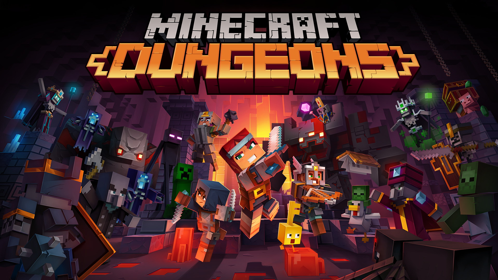

¿Que es Minecraft Dungeons

Minecraft Dungeons es el título más reciente de Mojang, creadores de Minecraft. Ha sido muy esperado por los fans, ya que Minecraft marcó toda una época y esencialmente creó su propio género. Una generación entera creció con ese juego, que no hizo más que crecer con los años. Tanto por trabajo de los desarrolladores originales como por los «mods» de la gente. De hecho, esa fácil modificación del juego fue uno de los factores que impulsó su popularidad. Modificación, libertad absoluta para el jugador, mundo aleatorio y sin igual, «crafteo» de miles de objetos… Parecía la receta para un RPG perfecto. Y… Lamentablemente, Minecraft Dungeons no cumple con las expectativas de su antecesor.
No vamos a dar rodeos: Minecraft Dungeons no es un mal juego, pero hay que tratarlo como lo que es y no lo que no pudo ser. Es un RPG muy básico, para principiantes. Probablemente esa fuera la intención de Mojang, de hecho. Introducir una nueva generación de jugadores al género. Lamentablemente, aunque correcto, no está hecho al estándar de su antecesor. Minecraft puso el listón muy alto, mientras «Dungeons» hace todo lo contrario.
Es un juego que lleva mucho de la mano al jugador. Con un mundo aleatorio muy limitado, sin crafteo. Ya en el menú de creación de personajes vemos la escasa libertad que dan al jugador: Crear un personaje es… Elegir uno de la lista predeterminada. Eso, o pagar por DLC con unas cuantas «skins» más. Nada de crearlas tú mismo. Nada de mods. De hecho el juego ni siquiera usa el motor gráfico original de Minecraft. Minecraft Dungeons funciona en Unreal Engine, eso implica que incluso si algún día fuera modificable, los creadores de mods más populares tendrían un entorno absolutamente desconocido.
El juego es un RPG muy simplón. La presentación está bastante lograda, desde luego evoca el mismo estilo artístico que Minecraft. Lamentablemente, en el apartado musical tuvimos que despedirnos de la única y tan personal soundtrack de C418 a favor de una mucho más genérica y olvidable. Correcta, ojo; pero nada especial. El apartado sonoro por suerte está a la altura de siempre. Extraña mucho la interfaz, que poco o nada tiene que ver con la de Minecraft en estética y funcionalidad. Evidentemente está diseñada para consola, es totalmente funcional pero se siente muy vacía. No se puede girar la cámara, mover el mapa ni hacer zoom hacia tu personaje.